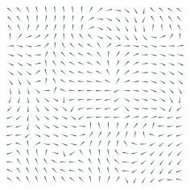
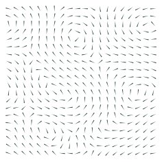
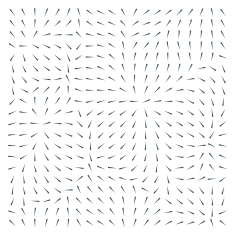

Overview
Skip to the visual demo at the bottom.This explores the numerical methods underlying Jos Stam's Real-Time Fluid Dynamics for Games and implements a two-dimensional semi-Lagrangian fluid simulation.
The method is intended for real-time applications such as for computer games or in lower-end hardware and so the specific solution techniques are geared towards a low-cost simulation whilst still maintaining stability at a larger time-step to distance-step ratio. The central idea is to solve the incompressible Navier–Stokes equations by splitting the problem into a sequence of simpler operations which can be solved via implicit finite difference steps and semi-Lagrangian advection.
The simulation works on a grid of cells, each representing a \( (1/N) \times (1/N) \) square in the square domain. At each time step, several arrays are updated, each storing a value for every cell in the grid. These arrays represent scalar fields: three store the RGB dye concentrations, and two store the horizontal and vertical components of the velocity field.
At each step of the simulation, the source is added (both to the dye matrix and to the velocity matrix), then a repeated pattern of operations is applied to the field. The velocity diffuses, projects, advects, and then projects again, and the dye concentration simply diffuses and then advects at each time step.
We will look at each of the steps in turn and then work our way back towards Navier–Stokes.
Diffusion
In the diffusion step, we solve the implicit backward Euler update:
d0[i, j] = d[i, j] - dt * diff * N * N * (d[i-1, j] + d[i+1, j] + d[i, j-1] + d[i, j+1] - 4*d[i, j])
Where d0 and d are the current and future values respectively, of the quantity which we are diffusing (one of the components of velocity or an RGB dye value).
The value dt is the timestep, N is the number of cells on each row or column, and diff is a constant dictating either the viscosity (for velocities) or the diffusion rate (for dyes).
For a small distance \(h > 0\) and a sufficiently smooth function \(f\), an approximation of the second derivative is \[ \frac{\partial^2 f}{\partial x^2} = \frac{f(x + h, y) + f(x - h, y) - 2f(x, y)}{h^2} + O(h^2) . \] We combine this with the approximation for the \(y\)-direction to get \begin{align*} \nabla^2 f &= \frac{\partial^2 f}{\partial x^2} + \frac{\partial^2 f}{\partial y^2} \\ &= \frac{f(x + h, y) + f(x - h, y) + f(x, y + h) + f(x, y - h) - 4f(x, y)}{h^2} + O(h^2) \end{align*}
By rearranging, we can see that the diffusion step is a finite difference solution of the equation
\[
\frac{\partial d}{\partial t}
= \mu \nabla^2 d
,
\]
where \(\mu\) represents the constant diff which will be the kinematic viscosity \(\nu\) for the velocity and a diffusion parameter \(\kappa\) for dye concentrations.
The time derivative is represented by (d[i, j] - d0[i, j]) / dt at each point \((i, j)\), and the Laplacian is discretised using the 5-point stencil
N * N * (d[i-1, j] + d[i+1, j] + d[i, j-1] + d[i, j+1] - 4 * d[i, j]).
Instead of being a simple update step where only the new value for d[i, j] appears in the equation, the equation creates a linear system which is approximated via Gauss–Seidel iterations which will certainly converge due to the fact that the matrix of the system is strictly diagonally dominant.
Interestingly, if the domain is taken to be toroidal (the left and right connect and the top and bottom connect with periodic boundary conditions), then the matrix is circulant and so can be solved exactly utilising DFTs in only \(O(N^2 \log(N))\).
Advection
In this step we work out how the velocities transport a specific "particle" carrying our quantity of interest (which is again one of the RGB dye values or a component of the velocity itself) from one location to another.
The update rule will again work backwards. Starting from a grid cell and using the velocity to approximate which specific point has been transported and interpolating its value from the nearest values.
That is to say, for each grid cell d[i, j], we calculate where the point [i, j] was on the previous step using
i' = i - N * dt * u[i, j];
j' = j - N * dt * v[i, j];
Here, u[i, j] and v[i, j] are the velocity values in the \(x\) and \(y\) directions respectively (and i' and j' are floating point numbers).
The four closest grid points to [i', j'] (shown in magenta above) are then combined using bilinear interpolation to estimate the value of \(d\) at that position. This value is assigned to d[i, j].
In order to frame this mathematically, we assume the vector-valued function of time \(\bsq(t)\) denotes a position at each point in time. We assume it represents the location of a small "particle" which is carried by the fluid and so should satisfy \[ \frac{\rmd\bsq}{\rmd t}(t) = \bsu(\bsq(t), t) , \] where we use \(\bsu(\bsx, t)\) to represent the velocity vector at time \(t\) and 2D position \(\bsx\).
If we assume that the function \(\bsq(t)\) represents a path which reaches the point represented by [i, j] at the end of a time step, then the advection step is a way of updating the value of the field based on the equation
\[
\frac{\rmd}{\rmd t} d(\bsq(t), t) = 0
.
\]
We write the scalar field as \(d(\bsx, t)\), making its dependence on both position and time explicit.
By expanding this equation we get \begin{align*} \frac{\rmd}{\rmd t} d(\bsq(t), t) &= \frac{\partial d}{\partial t} + \frac{\rmd q_1}{\rmd t} \frac{\partial d}{\partial x} + \frac{\rmd q_2}{\rmd t} \frac{\partial d}{\partial y} \\ &= \frac{\partial d}{\partial t} + \bsu \cdot \nabla d . \end{align*} Which produces the more familiar form of the advection equation \[ \frac{\partial d}{\partial t} + \bsu \cdot \nabla d = 0 . \]
Projection
The projection step starts off by utilising two new temporary scalar fields, div and p.
Each cell in div is defined by
div[i, j] = 0.5 * h * (u[i+1, j] - u[i-1, j] + v[i, j+1] - v[i, j-1]);
which implies that div represents the discrete divergence field of \(\bsu\) multiplied by \(h^2\), where \(h = 1/N\).
Gauss–Seidel iterations are used again, this time to solve the system
div[i, j] = p[i-1, j] + p[i+1, j] + p[i, j-1] + p[i, j+1] - 4*p[i, j]
for the array p.
In this case though, unlike the diffusion step above, we are solving the Poisson equation
\[
h^2 \, \nabla^2 p = h^2 \, \nabla \cdot \bsu
,
\]
for a field \(p\).
Finally, the velocity field is updated as follows
u[IX(i,j)] -= 0.5*(p[IX(i+1,j)]-p[IX(i-1,j)])/h;
v[IX(i,j)] -= 0.5*(p[IX(i,j+1)]-p[IX(i,j-1)])/h;
implying that the velocities are replaced with \(\bsu^* = \bsu - \nabla p\).
The reasoning behind these steps becomes clear when taking the divergence of this new quantity \[ \begin{aligned} \nabla \cdot \bsu^* &= \nabla \cdot (\bsu - \nabla p) \\ &= \nabla \cdot \bsu - \nabla^2 p \\ &= 0 . \end{aligned} \] The projection step has succeeded in replacing the velocity field with one that is (approximately) divergence free, thus ensuring the condition \(\nabla \cdot \bsu = 0\) is met. This projection is due to Helmholtz–Hodge, which tells us that, under appropriate boundary conditions, a vector field can be decomposed into a divergence-free component and a gradient field, which here is \(\nabla p\).



Tying it together
The diffusion and advection equations derived above describe the effects of viscosity and transport on the velocity field. Together with pressure and external forces, these give the incompressible Navier–Stokes equations \[ \begin{aligned} \frac{\partial \bsu}{\partial t} + (\bsu\cdot\nabla)\bsu &= -\frac{1}{\rho}\nabla P + \nu \nabla^2\bsu + \boldsymbol{f} , \\ \nabla\cdot\bsu &= 0 . \end{aligned} \] Here \(P\) is the physical pressure, \(\rho\) is the density and \(\boldsymbol{f}\) represents external forces per unit mass. In our case we will end up with an equivalent variant. Denoting the projection from the projection step as \(\calP\), we can consider the differential equation \[ \frac{\partial \bsu}{\partial t} = \calP \big(\nu\nabla^2\bsu - (\bsu\cdot\nabla)\bsu + \boldsymbol{f}\big) . \] This is the first equation above (the momentum equation) with the projection \(\calP\) applied to both sides, noting that \(\calP \! \left(\frac{\partial \bsu}{\partial t}\right) = \frac{\partial \bsu}{\partial t}\) and that \(\calP (\nabla P) = 0\). So long as \(\nabla \cdot \bsu_0 = 0\), this equation is equivalent to uncompressable Naver–Stokes because the right-hand side is always divergence free. Taking the divergence of both sides gives \[ \frac{\partial}{\partial t} \nabla \cdot \bsu = 0 , \] and so \(\nabla \cdot \bsu(t) = \nabla \cdot \bsu(0) = 0\). A vector field solving the equation for divergence free initial conditions should remain divergence free.
We now consider how the individual terms are handled by the numerical method.
Splitting
The diffusion and advection steps of the finite difference scheme relate to different terms in the full Navier–Stokes equations. Rather than solving all the contributions simultaneously, we split the evolution equation into simpler subproblems, each corresponding to an individual term. These subproblems are then solved sequentially over each time step. This approach is known as operator splitting.
The dye time step produces \(d^{n + 1} = d^n + \Delta t (\kappa \nabla^2 d^n - \bsu^n \cdot \nabla d^n + S_d) + O(\Delta t^2)\)
At the \(n^\text{th}\) time step, the source is first added to the dye field, followed by the diffusion step, producing an intermediate field \(d^*\). We have \[ d^* = d^n + (\kappa \nabla^2 d^* + S_d) \Delta t , \] using the approximation for the Laplacian of \(d^*\). The advection step updates the intermediate field \(d^*\) with \[ d^{n+1}(x) \approx d^*(x - \bsu^n \Delta t) \] for each position \(x\). (In practice, this uses the continuous bilinear interpolation of the field \(d^*\).) We use the multivariate Taylor expansion to see that \[ d^*(x - \bsu^n \Delta t) = d^*(x) - \Delta t \bsu^n \cdot \nabla d^*(x) + O(\Delta t^2) . \] The time step then produces \[ \begin{aligned} d^{n + 1} &= d^* - \Delta t \bsu^n \cdot \nabla d^* + O(\Delta t^2) \\ &= d^n + \Delta t (\kappa \nabla^2 d^* - \bsu^n \cdot \nabla d^* + S_d) + O(\Delta t^2) \\ &= d^n + \Delta t (\kappa \nabla^2 d^n - \bsu^n \cdot \nabla d^n + S_d) + O(\Delta t^2) , \end{aligned} \] where we use the fact that \(d^* - d^n = O(\Delta t)\). The local splitting error is \(O(\Delta t^2)\).
The velocity update is \( \bsu^{n + 1} = \bsu^n + \Delta t \, \calP\big(\nu \nabla^2 \bsu^n - (\bsu^n \cdot \nabla) \bsu^n + \bsf)\big) + O(\Delta t^2) \).
The velocity update includes the projection steps. If we assume that \(\bsu^n\) is already divergence free, then the result of the projection (using vector notation) applied to the partially updated field will be \[ \begin{aligned} \bsu^* &= \calP\big(\bsu^n + \Delta t (\nu \nabla^2 \bsu^n + \bsf)\big) \\ &= \bsu^n + \Delta t \calP\big(\nu \nabla^2 \bsu^n + \bsf\big) , \end{aligned} \] where \(\bsf\) represents the source force added to the velocity. The same is performed to the advection step \[ \begin{aligned} \bsu^{n + 1} &= \calP\big(\bsu^* - \Delta t (\bsu^n \cdot \nabla) \bsu^* \big) + O(\Delta t^2) \\ &= \bsu^n + \Delta t \, \calP\big(\nu \nabla^2 \bsu^* - \calP((\bsu^n \cdot \nabla) \bsu^* + \bsf))\big) + O(\Delta t^2) \\ &= \bsu^n + \Delta t \, \calP\big(\nu \nabla^2 \bsu^* - (\bsu^n \cdot \nabla) \bsu^* + \bsf)\big) + O(\Delta t^2) \\ &= \bsu^n + \Delta t \, \calP\big(\nu \nabla^2 \bsu^n - (\bsu^n \cdot \nabla) \bsu^n + \bsf)\big) + O(\Delta t^2) . \end{aligned} \] The first projection step ensures that the velocity field used for advection is divergence free. The second projection is then applied after advection to remove any divergence introduced during that step, ensuring that the velocity is again approximately divergence-free at the next time step.
Combining these results, we see that the numerical scheme approximates the following evolution equations to first order in time: \[ \frac{\partial d}{\partial t} = \underbrace{\kappa\nabla^2 d}_{\text{diffusion}} - \underbrace{\bsu\cdot\nabla d}_{\text{advection}} + \underbrace{S_d}_{\text{source}}, \] whilst the diffusion and advection contributions to the velocity are \[ \frac{\partial \bsu}{\partial t} = \calP\big( \underbrace{\nu\nabla^2\bsu}_{\text{diffusion}} - \underbrace{(\bsu\cdot\nabla)\bsu}_{\text{advection}} + \underbrace{\boldsymbol{f}}_{\text{external force}} \big) . \] Here \(S_d\) and \(\boldsymbol{f}\) represent sources of dye and momentum respectively.
In the implementation, the source is added first, followed by diffusion and advection. The velocity field additionally undergoes projection between these steps to maintain incompressibility. This gives us a sequence of relatively inexpensive operations in place of solving the full coupled system at once.
Conclusion
The essential idea is to approximate incompressible fluid flow through a sequence of relatively inexpensive operations. Diffusion smooths the fields, advection transports them, and projection enforces incompressibility. Together, these steps provide a stable and efficient approximation to the Navier–Stokes equations, well suited to interactive applications where visual quality and computational speed are more important than strict physical accuracy.
Visualisation
The browser-based simulation uses a \(96\times96\) grid overlaid on a canvas where the colours are interpolated from the nearest squares producing a smoother view of the fluid. Coloured dye is periodically injected with a velocity impulse from randomly selected edges, producing smoke-like patterns that reveal the movement of the fluid. The mouse or touchscreen can also be used to perturb the velocity field and interact with the flow.
As the dye is constantly being injected and has nowhere else to go, the RGB values will eventually max out and the screen will fade to white.